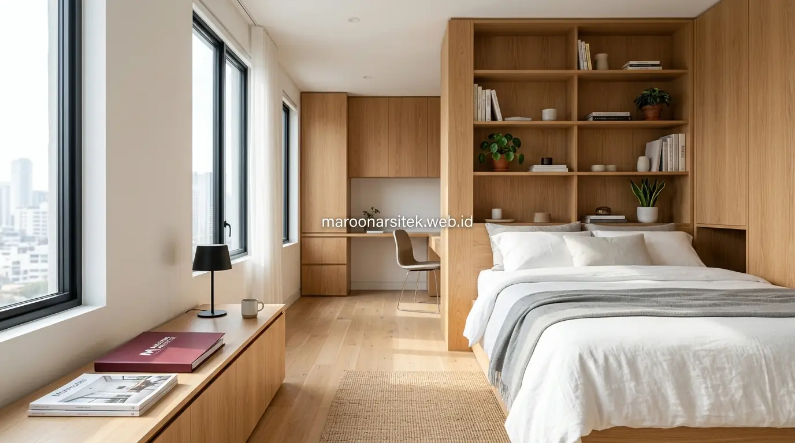

Interior apartemen custom untuk unit studio dapat memanfaatkan lemari built-in vertikal, sofa bed convertible, dan partisi geser multifungsi sebagai solusi tambahan yang memaksimalkan ruang tanpa mengorbankan kebutuhan fungsional penghuni. Maroon Arsitek merancang kombinasi elemen ini untuk melengkapi solusi furnitur lipat dalam menciptakan hunian studio yang nyaman dan fungsional melalui pendekatan jasa desain interior custom profesional.
Selain kasur dan meja lipat, terdapat elemen furnitur lain yang dapat dioptimalkan untuk memaksimalkan ruang vertikal maupun fleksibilitas tata ruang pada unit studio. Bagian berikut menguraikan tiga solusi tambahan yang melengkapi kebutuhan interior custom untuk ruang terbatas agar setiap sudut hunian dapat dimanfaatkan secara maksimal.
Lemari Built-In Vertikal untuk Memaksimalkan Tinggi Ruang
Lemari built-in vertikal memanfaatkan ketinggian ruang hingga mendekati plafon, memaksimalkan kapasitas penyimpanan tanpa memperluas jejak lantai yang digunakan, berbeda dari lemari standar yang umumnya hanya memanfaatkan sebagian tinggi ruang yang tersedia. Pendekatan ini penting terutama untuk unit studio dengan luas lantai yang sangat terbatas.
Bagian atas lemari yang sulit dijangkau tanpa alat bantu difungsikan untuk penyimpanan barang yang jarang digunakan, seperti koper atau seprai cadangan, sementara bagian yang mudah dijangkau dialokasikan untuk barang dengan frekuensi penggunaan tinggi sehari-hari.
Desain pintu lemari turut disesuaikan agar tidak memerlukan ruang ayun berlebihan saat dibuka, menggunakan sistem sliding atau lipat yang lebih hemat ruang dibanding pintu ayun konvensional pada lemari dengan desain standar.
Sistem Pintu Sliding untuk Menghemat Ruang Ayun
Kebutuhan efisiensi ruang gerak dijawab melalui penggunaan sistem pintu sliding pada lemari built-in, menghilangkan kebutuhan ruang ayun yang biasanya diperlukan pintu konvensional, sehingga area di depan lemari tetap dapat difungsikan untuk aktivitas lain.
Sistem ini memberikan efisiensi ruang tambahan yang signifikan pada unit studio, di mana setiap centimeter ruang gerak yang dihemat dapat dimanfaatkan untuk kebutuhan fungsional lain dalam keseluruhan tata ruang hunian.
Sofa Bed Convertible sebagai Solusi Area Duduk dan Tidur
Sofa bed convertible menggabungkan fungsi area duduk di siang hari dengan fungsi tempat tidur tambahan, memberikan fleksibilitas bagi penghuni yang sesekali menerima tamu menginap tanpa memerlukan ruang tidur terpisah dalam unit studio. Solusi ini melengkapi kasur lipat utama sebagai opsi tidur tambahan yang lebih kasual.
Mekanisme konversi dirancang mudah dioperasikan tanpa memerlukan pembongkaran bantal atau aksesori secara rumit, memastikan perubahan fungsi dari sofa menjadi tempat tidur dapat dilakukan dengan cepat sesuai kebutuhan penghuni.
Pemilihan material pelapis sofa bed mempertimbangkan kenyamanan baik dalam posisi duduk maupun tidur, serta daya tahan terhadap penggunaan berulang mengingat fungsi ganda yang dijalankan furnitur ini setiap harinya.

Kemudahan Mekanisme Konversi Sofa Menjadi Tempat Tidur
Kebutuhan kepraktisan penggunaan sehari-hari dijawab melalui pemilihan mekanisme konversi yang sederhana dan cepat, memungkinkan penghuni mengubah fungsi sofa menjadi tempat tidur tanpa memerlukan tenaga atau waktu berlebihan.
Kemudahan ini penting agar furnitur benar-benar digunakan sesuai fungsi gandanya, mengingat mekanisme yang rumit justru dapat membuat penghuni enggan memanfaatkan fitur konversi yang sebenarnya menjadi nilai tambah utama furnitur tersebut.
Partisi Geser Multifungsi untuk Fleksibilitas Ruang Studio
Partisi geser memungkinkan pembagian ruang secara fleksibel, memberikan privasi sementara ketika dibutuhkan namun dapat dibuka kembali untuk menyatukan ruang saat privasi tidak diperlukan, tanpa memerlukan dinding permanen yang mengurangi fleksibilitas tata ruang unit studio. Solusi ini membantu menciptakan ilusi ruang terpisah tanpa benar-benar membagi unit secara permanen.
Material partisi dipilih dengan bobot ringan namun tetap kokoh, memudahkan pergerakan geser tanpa memerlukan tenaga berlebihan sekaligus menjaga stabilitas struktur saat partisi digunakan dalam posisi tertutup maupun terbuka.
Penempatan jalur geser partisi direncanakan sejak tahap desain interior, memastikan mekanisme dapat berfungsi optimal tanpa mengganggu elemen furnitur lain yang telah ditempatkan dalam tata ruang unit studio.
Material Ringan namun Kokoh untuk Partisi Geser
Kebutuhan kemudahan operasional partisi dijawab melalui pemilihan material yang ringan namun tetap kokoh, memastikan partisi dapat digeser dengan mudah oleh penghuni tanpa mengorbankan stabilitas struktur saat digunakan dalam jangka panjang.
Pemilihan material ini turut mempertimbangkan aspek akustik, membantu partisi memberikan tingkat privasi suara yang memadai meski bukan berupa dinding permanen yang biasanya digunakan untuk pembagian ruang konvensional.